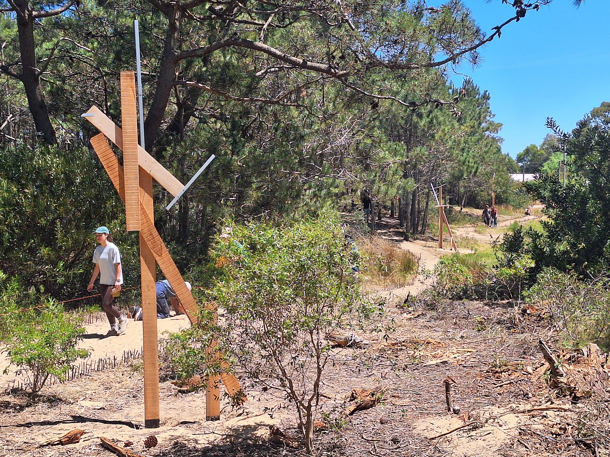

Sobre el proyecto

El proyecto consiste en la implementación de un recorrido de tótems informativos dentro del Ecoparque Punta del Diablo, diseñados a partir del estudio y observación de su entorno natural. Cada tótem incorpora un código QR que dirige a una plataforma web diseñada y construida en el marco del trabajo universitario, por estudiantes y docentes, la cual contiene información e ilustraciones acerca de lo que se puede observar de animales y especies dentro del parque, además de memorias vinculadas a ellas de los residentes del territorio. Los tótems se disponen estratégicamente según los elementos naturales que los rodean, estableciendo un vínculo directo entre el espacio físico y el contenido informativo.